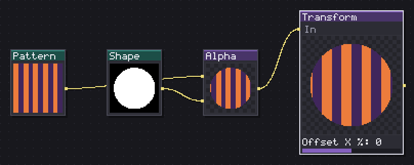
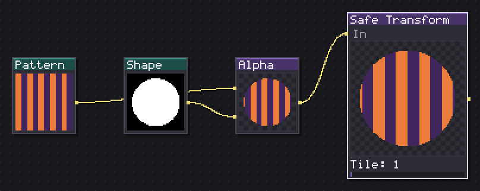
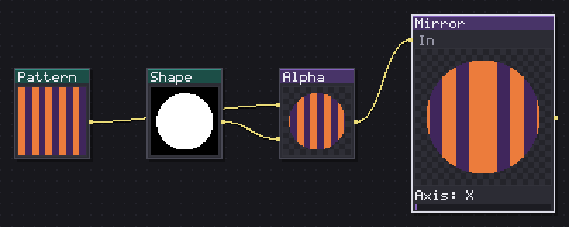
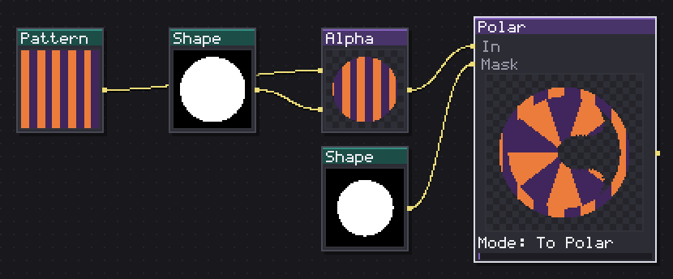
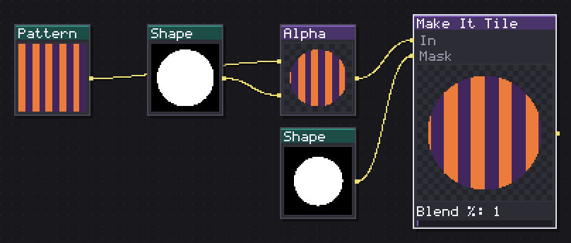
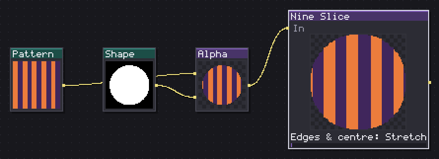
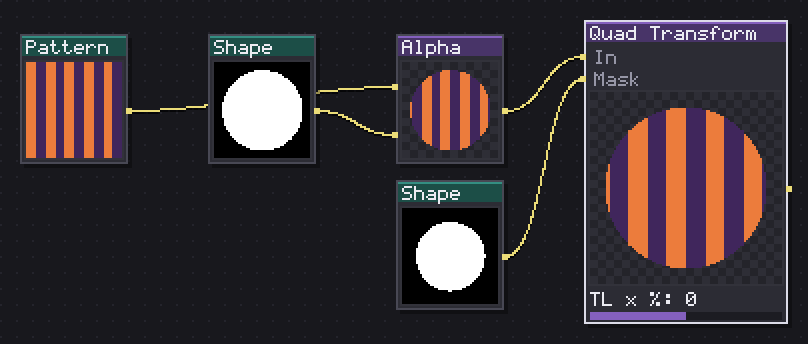
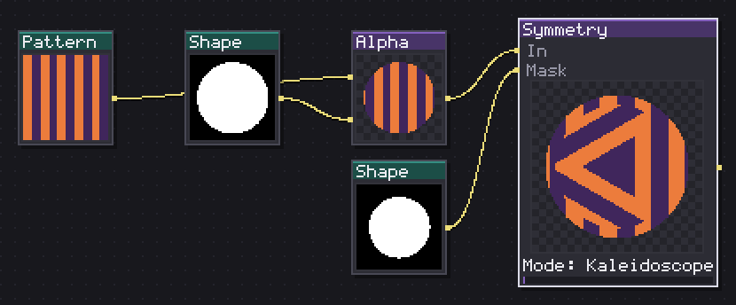

These eight nodes move pixels around the canvas without touching what is on them: offset, rotate, scale, mirror, warp to a quad, or blend the edges into a tile. Most pixel art starts flat and square, and a Transform node is usually the first stop after a Layer or Canvas import, before anything paints or shades it.
Everything here wraps by default, so an offset that pushes a texture past the right edge brings it back on the left, the behaviour a tileable texture needs. Three of the eight, Safe Transform, Make It Tile and Symmetry, exist only to protect that result: each guarantees the edges still match after the transform runs, rather than leaving it to luck.

Moves, rotates, scales and shears, with wrapping or clipping to the opaque area.
Transform is the general purpose move: offset, rotate, scale, skew, and with Quad on, a four corner perspective pull, all in one node instead of three chained together.
Offset X % and Offset Y % move as a percentage of the canvas, so the same node works at 16 px and at 256 px without retyping a pixel count. Rotate turns around the centre, and Scale % with Scale Y % (0=X) left at zero scales evenly; give Scale Y a value of its own to squash or stretch one axis, useful for turning a round emitter core into an oval one.
Wrap (tile) is on by default, so a texture pushed past an edge reappears on the other side. Turn it off when the source has real edges, a UI panel, a portrait, and the empty margin should stay transparent instead of repeating.
Auto crop to opaque stretches the input's opaque bounding box to fill the canvas first, which helps after an import that left a small sprite adrift in a big transparent frame.
Quad (perspective) adds eight corner sliders for a proper four point perspective warp: drag one corner in and the square becomes a trapezoid, a fast way to fake a sign or a screen seen at an angle without a real 3D node.
In: In (image) · Out: image
Parameters

Rotates in steps of 90 and shifts half a tile: still tiles, always.
Safe Transform is Transform with the one guarantee it does not have: whatever tiles going in still tiles coming out. Safe rotation (90) snaps Rotation to the nearest 90 degree step, and Safe offset (1/2 tile) snaps Offset X % and Offset Y % to a half tile increment, so the seam a free rotation or an odd offset would open never opens.
Tile sets how many times the source repeats across the canvas before any transform runs, which is what lets a rotation or a mirror land on a whole number of copies instead of slicing one in half.
I use it in place of Transform whenever the graph feeds a tileable output, and reach for Mirror X or Mirror Y for a free flip rather than the safety switches, since mirroring never breaks a tile on its own. Turn Safe rotation or Safe offset off only when previewing a deliberate break in the pattern, and switch them back on before export. With both off, this node's rotate and offset behave like Transform's, only clamped to the same eight step, half tile grid, so turning them back on rarely changes the composition, only whether it survives being repeated.
In: In (image) · Out: image
Parameters

Reflects across the X axis, the Y axis or both.
Mirror reflects the canvas across an axis. Axis picks X (left/right), Y (top/bottom) or Quad, which folds both axes into one corner and is the fastest way to turn a quarter of a design into a symmetrical icon or emblem.
With Axis at X or Y, Offset % slides the fold line off centre and Angle tilts it, so the reflection does not have to sit on the exact middle: push Offset to 40 and the near side becomes a thin sliver mirrored into a wide one. Quad ignores both, since a corner fold has no single line to move.
This is the cheapest way to build a symmetrical creature or prop: draw one half by hand or generate it, then mirror on X. It is also how I true up noise before feeding it to Isometric or Nature nodes that expect a balanced silhouette. Because the fold always uses the source pixels on the near side and never blends, the seam is a hard edge rather than a gradient, and shows if the source itself does not read cleanly right up to where the fold lands.
In: In (image) · Out: image
Parameters

Goes from cartesian to polar and back, with sides and repeats.
Polar goes from cartesian to polar coordinates or back. To Polar wraps a strip along the X axis around a centre point, which turns a horizontal gradient or noise band into a radial burst, a sun, or a whirlpool. To Cartesian does the opposite: it unrolls a circular pattern into a flat strip, handy for reading a radial gauge or a coin's rim as a straight texture you can edit normally.
Sides (0=circle) trades the circle for an N sided polygon outline, from a triangle up to twelve sides, so the same node builds a hex bolt head as easily as a sun. Repeats tiles the source around the circle instead of stretching it once, which turns one wedge of pattern into a spoked wheel. Angle rotates the whole result, and a mask input limits where the conversion applies, inverted with Invert mask.
I feed this a horizontal noise band for rays or bolts, and a vertical gradient for a coin's beveled rim read back to flat for painting.
In: In (image), Mask (image) · Out: image
Parameters

Blends opposite edges with their mirror so the seam disappears.
Make It Tile blends the opposite edges of a texture with their own mirror so the seam disappears without a hand retouch. Mode picks Mirror, fold each edge over itself, or Offset, shift the canvas by half and blend across the new centre seam, the classic offset-and-paint-over trick, done automatically. Axis limits the blend to X, Y or Both.
Blend % is the width of the fade as a percentage of the tile, and it is the one number worth sweeping: too low, under 10, leaves a visible band where the mirrored copy does not quite match the original brushwork; too high, past 60, softens so much of the tile that the middle blurs along with the edge. Something around 20 to 35 reads as an even texture rather than an obviously patched one.
A mask input limits the blend to where it is wanted, inverted with Invert mask, useful when only part of the tile (the ground, say, and not a rock sitting on top of it) needs its edges glued. I run this right before Output on any hand painted tile that was not built with wrapping in mind from the first stroke.
In: In (image), Mask (image) · Out: image
Parameters

Stretches a box by its edges and center while respecting the margins.
Nine Slice stretches a UI panel or box by its edges and centre while keeping the corners crisp, the standard nine-patch trick from any UI toolkit. Left, Right, Top and Bottom set the margins in source pixels: anything inside them is a corner and is copied untouched, and everything outside is stretched or tiled.
Width (0=canvas) and Height (0=canvas) set the output size; leave them at 0 to fill the node's own canvas, or type a size to build one panel at several sizes from the same source. Edges & centre switches between Stretch, a smooth resize, and Tile, repeat the middle strip instead of stretching it, which keeps a brick or plank pattern from smearing.
Crop to opaque box finds the input's opaque bounding box before slicing, which matters when the source panel sits on a larger transparent canvas rather than filling it. A document slice with a defined centre, Aseprite's own 9-slice box, overrides the four margin sliders automatically, so Margins from slice picks it up without retyping the numbers by hand.
In: In (image) · Out: image
Parameters

Stretches the image by taking its four corners wherever you put them.
Quad Transform stretches the image by dragging its four corners wherever you put them, a simpler cousin of Transform's Quad mode with nothing else attached. TL x %, TL y % and the matching pairs for TR, BR and BL move each corner independently, as a percentage of the canvas, from minus 50 to plus 50.
Pull one corner in and the image tapers on that side; push two adjacent corners the same way and the whole shape shears. It is the node to reach for to plant a texture on a sign, a book cover, or a screen seen from an angle, without touching rotation or scale directly.
Keep input outside decides what shows past the quad's edges: off, the default, leaves that area transparent, on keeps the untouched input showing through, which matters when the quad only needs to warp part of the frame and the rest should stay put. A mask input restricts the warp to part of the canvas, inverted with Invert mask, for a partial distortion over a background that should not move.
In: In (image), Mask (image) · Out: image
Parameters

Repeats one sector around the center, mirrored or in slices.
Symmetry repeats one sector of the canvas around the centre, either mirrored (Kaleidoscope) or copied without mirroring (Slice). Sectors sets how many wedges make up the full circle, from 2 up to 16: low counts read as a simple mandala or flower, high counts blur into a fine radial texture.
Mode is the difference between a kaleidoscope, where every other wedge flips so the pattern reads as continuous across each seam, and Slice, where the same wedge repeats untouched and the seams stay visible cuts, useful for a pie chart or a paddle wheel rather than an ornament.
Angle rotates which part of the source lands at the top of the first wedge, which matters because the whole pattern is built from whatever sits along that one slice: move Angle to catch the most interesting part of a noisy or generated source before committing to the repeat. A mask input and Invert mask limit where the effect runs.
I run this on noise or a generator output to build round emblems, gems and rune circles, since one seed and one angle sweep gives a full family of variations without redrawing anything by hand.
In: In (image), Mask (image) · Out: image
Parameters